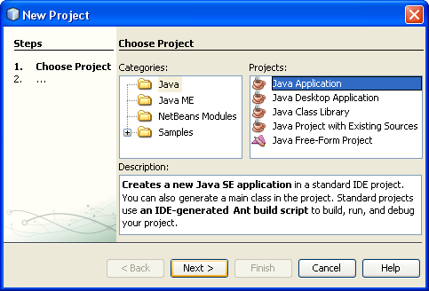
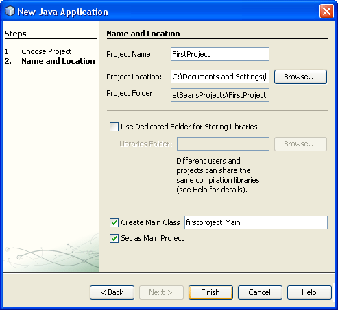
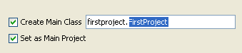
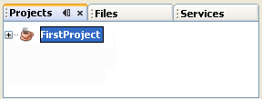
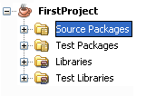
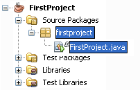

The NetBeans Software
When you first run NetBeans, you'll see a screen something like this one:
The NetBeans Software - First Start (38K)
You may have to drum your fingers and wait a while, as it's not the fastest thing in the world.
To start a new project, click on File > New Project from the NetBeans
menu at the top. You'll see the following dialogue box appear:

We're going to be create a Java Application, so select Java under Categories, and then Java Application under Projects. Click the Next button at the bottom to go to step two:

In the Project Name area at the top, type a Name for your Project. Notice how the text at the bottom changes to match your project name (in the text box to the right of Create Main Class):
firstproject.Main
If we leave it like that, the Class will have the name Main. Change it to FirstProject:

Now, the Class created will be called FirstProject, with a capital "F", capital "P". The package is also called firstproject, but with a lowercase "f" and lowercase "j".
The default location to save your projects appears in the Project Location text box. You can change this, if you prefer. NetBeans will also create a folder with your project name, in the same location. Click the Finish button and NetBeans will go to work creating all the necessary files for you.
When NetBeans returns you to the IDE, have a look at the Projects area in the top left of the screen (if you can't see this, click Window > Projects from the menu bar at the top of the software):

Click the plus symbol to expand your project, and you'll see the following:

Now expand Source Packages to see your project name again. Expand this and you'll see the Java file that is your source code.

This same source code should be displayed to the right, in the large text area. It will be called FirstProject.java. If you can't see a code window, simply double click FirstProject.java in your Projects window above. The code will appear, ready for you to start work.
The coding window that appears should look like this (we've changed the author's name):

One thing to note here is that the class is called FirstProject:
public class FirstProject {
This is the same name as the java source file in the project window: FirstProject.java. When you run your programmes, the compiler demands that the source file and the class name match. So if your .java file is called firstProject but the class is called FirstProject then you'll get an error on compile. And all because the first one is lowercase "f" and the second one uppercase.
Note that although we've also called the package firsproject, this is not necessary. We could have called the package someprogramme. So the name of the package doesn't have to be the same as the java source file, or the class in the source file: it's just the name of the java source file and the name of the class that must match.
In the next part, you'll learn about Java comments.